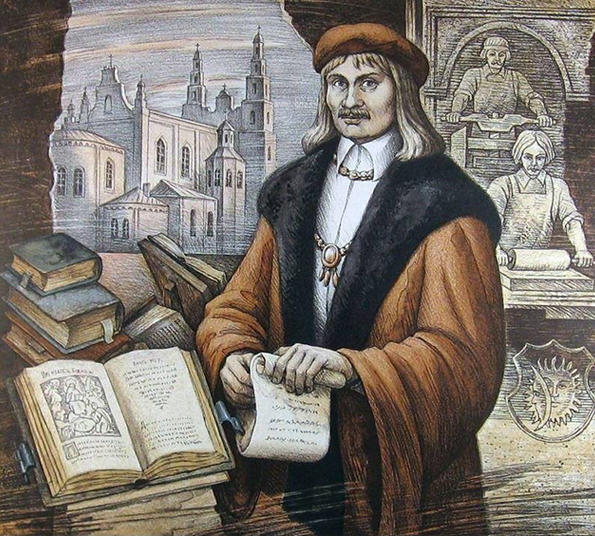
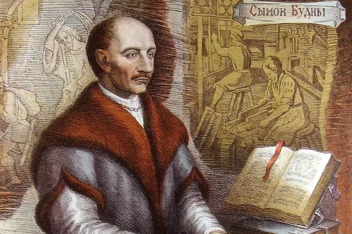
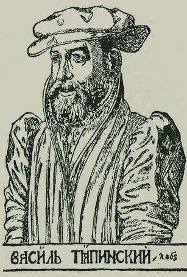
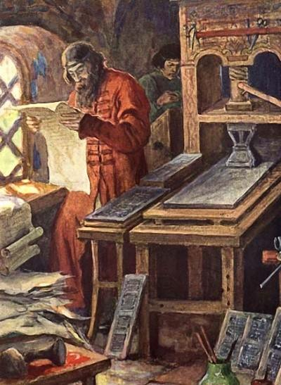
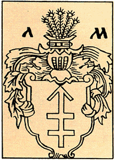
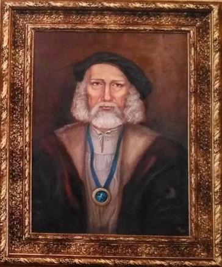
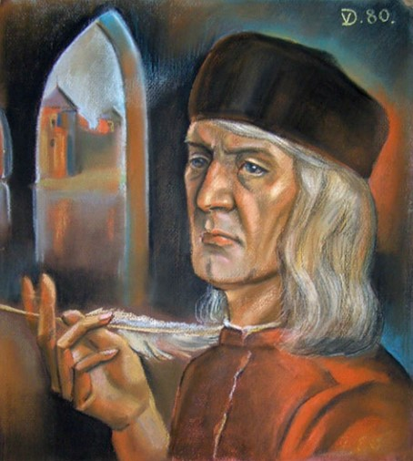
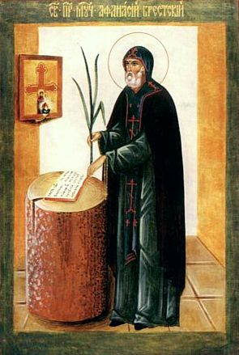
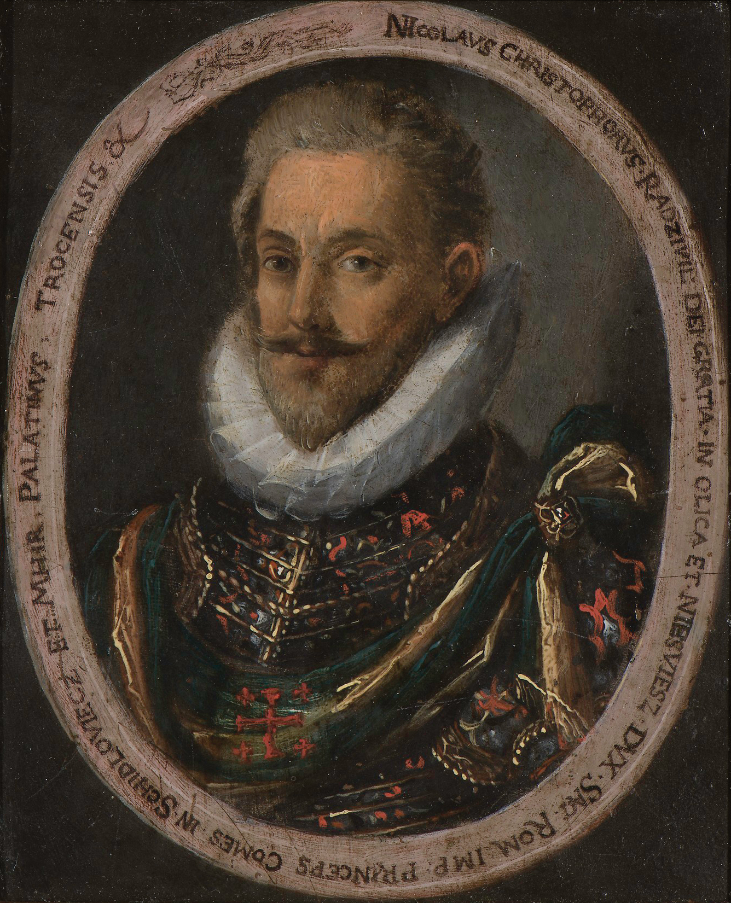

Франциск Скорина

1491 г. - 1572 г.
Деятельность Франциска Скорины оказала огромное влияние на развитие книгопечатания и письменности в Беларуси. Его книги оказали благотворное влияние на развитие белорусского литературного языка. Издания Скорины выделяются высоким качеством печати, характерными художественными, гравюрными иорнаментальными украшениями, шрифтом идругими компонентами издательской эстетики и мастерства.
Сымон Будный

январь 1530 г. - 13 января 1593 г.
В 1562 г. основал в Несвиже типографию, где издал, переведя на старобелорусский язык, «Катехизис». В дальнейшем занимался издательской деятельностью в Лоске.
Василий Тяпинский

1530 г. - 1600 г.
Основал типографию в своем имении Тяпино, в котором опу�бликовал в 70-е гг. XVI в. переведенное им на старобелорусский язык «Евангелие».
Петр Мстиславец

неизвестно - 1578 г.
Принял участие в основании первой типографии в Москве. В 1564 г. Иван Федоров и Петр Мстиславец издали в ней первые русские печатные книги. Вернувшись в ВКЛ, они напечатали в Заблудове(Польша) в 1569 г. «Евангелие учительное». Затем Мстиславец переехал в Вильну, где основал совместно с братьями Мамоничами типографию.
Виленские купцы Мамоничи

Их типография с 1574 до 1623 г. выпустила около сотни книг различного содержания.
Спиридон Соболь

1580-1590 г. - 1645 г.
В 1630 г. основал в Кутейно под Оршей типографию, где издал ряд книг, среди которых несколько учебников. Потом печатал книги в могилевских типографиях.
Николай Гусовский

1470 г. - 1533 г.
Самое известное его произведение - поэма «Песня про зубра», она получила большую популярность и была переведена на многие языки.
Афанасий Филипович

1595 г. - 1648 г.
Распространял мемуарную литературу в форме диариушей.
Николай Криштоф Радзивилл Сиротка

2 августа 1549 г. - 28 февраля 1616 г.
Писал и распространял литературу путешествий. Самое известное - «Перегринация».